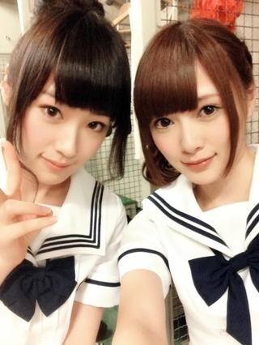
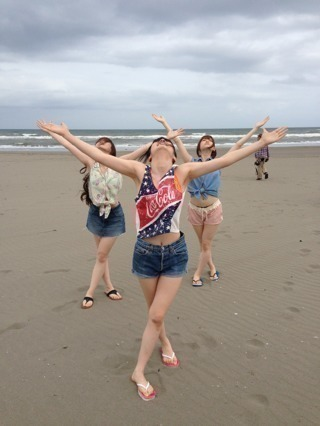
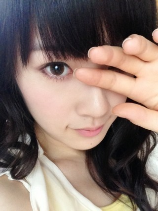

2013/0625Tue（´-`）.｡oO(か ずみん×183
こんにちは(*´ω`*)ﾉ
いつも応援ありがとうです！
コメント見たら80％くらいの方が
ワッフルコーン好きみたいで
びっくり((((/*0*)/
答えてくれてありがとね！
昨日はパールボールのハーフタイムに
出演させていただきました！
アメフトって凄いよね！
アメリカでは大人気すぎて
指名手配犯にタダでアメフトの観戦
チケットを送ってスタジアムに
来た所を逮捕！
みたいなことがあるって
父から昔聞いた((((/*0*)/
昨日はパールボールなだけに
頭にボールをつけてみました。笑

おだんご。
久しぶりにおいシャンやって
まいやんの隣になりました(ﾉ;ω;)ﾉ
まいやんはリアルおいシャンで
本当にalwaysいい香りがします！
あ、昨日発売のELOにも
お団子で載ってますので、
良かったら見てください！

ELOの撮影では
まいやん、さゆりんと
海に行きましたヽ(´>∀<`*)ﾉ
アメイジング*\(･v･)/*
真面目な写真は次回載せます〜笑
今週の乃木どこ、
子供大好きだから楽しかった♪
いつか...いや、最終的に?
教育番組に出たいです！
子供が大好きだから！
みんなで歌も歌いたいな♪
憧れの夢のまた夢です！
それでは今から自炊します！
今日はパスタ作るよ！！
パスタクッカーを買ったからね、
できるのさ(*´ω`*)ﾉ
頑張りまーす...♪
では(っ*´x`)っばいばい

2013/06/25 19:30
コメント(431)
お仕事お疲れ様です！
かずみん可愛いね！
乃木どこ？みたよ！かずみんが先生だったら毎日たのしーだろな！笑
これからも頑張ってね！
かずみん可愛いね！
乃木どこ？みたよ！かずみんが先生だったら毎日たのしーだろな！笑
これからも頑張ってね！
ｶｽﾞﾐﾝ先生よかったよー！
なんか心に残る授業だった((o(￣ー￣)o))
かずみんしかーー
うわっまいやんかわええ！！！
・・・(⌒-⌒; )
アメイジング！！！
だみぼー
アメイジング！！！
うわっまいやんかわええ！！！
・・・(⌒-⌒; )
アメイジング！！！
だみぼー
アメイジング！！！
PONの一発ギャグでアメイジングをやるとはな（笑）
乃木どこ？は他の先生より高山先生が1番良かったぞ
えっ！てかロッカールームで写真撮ってるし！
いいな(^｡^)
乃木どこ？は他の先生より高山先生が1番良かったぞ
えっ！てかロッカールームで写真撮ってるし！
いいな(^｡^)
1人暮らしだから
簡単に作れるもの教えてほしい
ELOみたよ よかったよ
頭にボールをぶつけてみた
っているのがかずみんらしくて
笑ってしまった
簡単に作れるもの教えてほしい
ELOみたよ よかったよ
頭にボールをぶつけてみた
っているのがかずみんらしくて
笑ってしまった
写真わろた(((っ･ω･)っ www
昨日見に行ったよ(｡･ω･)ﾉﾞ
お団子可愛かったよ！
アメフトの観戦も楽しかったし行ってよかった＼(^o^)／
お団子可愛かったよ！
アメフトの観戦も楽しかったし行ってよかった＼(^o^)／
大好き!!!!!!!!!!
かずみん、こんにちは。
ぴーちです！！
昨日のパールボール、観に行ったよ。
うちわ持ってたんだけど見えてたかな…？
お団子もめっちゃ可愛い(≧∇≦)b
ELO、買ったよ！
めっちゃ良かったよ。
これからもお仕事など頑張って下さい。
これからも応援します。
ぴーちです！！
昨日のパールボール、観に行ったよ。
うちわ持ってたんだけど見えてたかな…？
お団子もめっちゃ可愛い(≧∇≦)b
ELO、買ったよ！
めっちゃ良かったよ。
これからもお仕事など頑張って下さい。
これからも応援します。
ちわ！たくとんです！
ホワイトハイだ(*^^*)
お団子ヘアー好き！これにマキシ丈ワンピなら最高(笑)
パールボールお疲れさまでした！
乃木どこ見たよ！かずみんやっぱ面白い！(^∀^)
そういえば何でワッフルコーン嫌いなの？
それじゃ！
ホワイトハイだ(*^^*)
お団子ヘアー好き！これにマキシ丈ワンピなら最高(笑)
パールボールお疲れさまでした！
乃木どこ見たよ！かずみんやっぱ面白い！(^∀^)
そういえば何でワッフルコーン嫌いなの？
それじゃ！
いつも応援してるよー
ではお仕事がんばってね*\(^o^)/*
アメイジングの写真おもしろいね☆
アメイジングって
どういう意味？
かずみん教えてください♪
アメイジングって
どういう意味？
かずみん教えてください♪
かずみんすごかった！
先生になれるよ！（笑）
先生になれるよ！（笑）
みんなかわいい(／▽＼)♪
カラオケいきたい（＾ω＾）
パールボールいったよぉ！！
遠くてほとんど見えなかった...
双眼鏡持ってってよかったけどそれでも見えなかった...
アメイジング写真楽しそうでいいね！！
質問
かずみんは落ち込んだときとかどういう風にたち直す？？
遠くてほとんど見えなかった...
双眼鏡持ってってよかったけどそれでも見えなかった...
アメイジング写真楽しそうでいいね！！
質問
かずみんは落ち込んだときとかどういう風にたち直す？？
こんばんわ
ライブお疲れ様でした
自分は学校で行けませんでした
めっちゃ行きたかったです
ELO見ましたよ
お団子めっちゃかわいいです
では明日もがんばってください
かずみん*\(^o^)/*
うえけんだーっぜぜぜぜぜーっ‼
きゃわたーんっ（≧∇≦）
うえけんだーっぜぜぜぜぜーっ‼
きゃわたーんっ（≧∇≦）
更新ありがとう♪
いつもお疲れ様です！
お団子いいですね(^^)♪
相変わらず可愛いです(笑)
いつでもどこでも応援しています。
hiroya
こんばんは、かずみん。
昨日の東京ドームのイベントお疲れ様でした！
行きたかったですが、遠過ぎました。
さて、アイスのコーンの話しですが、好きな人が多いのが現実だと思っていました。
雑誌の雑誌で、海に行き羨ましいです。
勿論、これからの季節海水浴シーズンが到来するので、楽しいでしょうね！
それでは、自炊して美味しいもの食べて下さい！
アメージング！
昨日の東京ドームのイベントお疲れ様でした！
行きたかったですが、遠過ぎました。
さて、アイスのコーンの話しですが、好きな人が多いのが現実だと思っていました。
雑誌の雑誌で、海に行き羨ましいです。
勿論、これからの季節海水浴シーズンが到来するので、楽しいでしょうね！
それでは、自炊して美味しいもの食べて下さい！
アメージング！
かずみんお疲れー！
昨日はいけなかったけど7/9の東京ドームいくよ(*^^*)
バックネット裏でかずみんタオルかかげてシャツももってく！
まいまい推しの友達と一緒に行って目立つようにがんばる！w
お団子かずみんやばいっしょwかわいすぎw
オガッキー
昨日はいけなかったけど7/9の東京ドームいくよ(*^^*)
バックネット裏でかずみんタオルかかげてシャツももってく！
まいまい推しの友達と一緒に行って目立つようにがんばる！w
お団子かずみんやばいっしょwかわいすぎw
オガッキー
こんばんは♪
お疲れ様です！！！！
アメフトってすごいですね！
そんなふうに事件解決したりするんですが～
はじめて知りました！
ELO明日買って見ます！
でわでわ
暑い日が続いているので、水分補給しっかりしてくださいね♪
また～
お疲れ様です！！！！
アメフトってすごいですね！
そんなふうに事件解決したりするんですが～
はじめて知りました！
ELO明日買って見ます！
でわでわ
暑い日が続いているので、水分補給しっかりしてくださいね♪
また～
乃木どこ面白かったよ〜！！( ^ω^ )
子どもも楽しそうだったし、かずみんはいい先生になれそうだと思った！wしゃべりのテンポが素晴らしかった！！
バラエティキャラになったから可愛いて言われなくなってきたのかね！？w まいやんと映ってる写真は可愛いのに・・・
子どもも楽しそうだったし、かずみんはいい先生になれそうだと思った！wしゃべりのテンポが素晴らしかった！！
バラエティキャラになったから可愛いて言われなくなってきたのかね！？w まいやんと映ってる写真は可愛いのに・・・
昨日東京ドーム行ったよーっ！( ´ ▽ ` )ﾉ
おいシャンとガールズルール
良かった(((o(*ﾟ▽ﾟ*)o)))
ドームの中心だと
なんだか小さく見えた(≧∇≦)笑
今日も１日おつかれー！！
☆☆☆☆☆プーさん☆☆☆☆☆
おいシャンとガールズルール
良かった(((o(*ﾟ▽ﾟ*)o)))
ドームの中心だと
なんだか小さく見えた(≧∇≦)笑
今日も１日おつかれー！！
☆☆☆☆☆プーさん☆☆☆☆☆
かずみんこんばんは～
アメフトはテレビで1回だけかな～
スポーツって真面目に観てると面白いよねっ！
そして、アメイジング！！
何か久しぶりな感じするけど進化してるね(^o^)
さゆりんとまいやんバックでさらに良くなってるわ～
それじゃあ、明日はテスト！！
今から勉強だぁぁぁああ！！！
これからも応援してるよ!(^^)!
バイバーイ(^_^)ゞ
かずみんなら教育番組イケるでしょ!!
アメフトはテレビで1回だけかな～
スポーツって真面目に観てると面白いよねっ！
そして、アメイジング！！
何か久しぶりな感じするけど進化してるね(^o^)
さゆりんとまいやんバックでさらに良くなってるわ～
それじゃあ、明日はテスト！！
今から勉強だぁぁぁああ！！！
これからも応援してるよ!(^^)!
バイバーイ(^_^)ゞ
かずみんなら教育番組イケるでしょ!!
かずみ、マジで最高!
その感じでいけばいいぜぜぜぜぜぜぜぜ！
(×σ×)？
おますみなさい！(＋∞＋)?
その感じでいけばいいぜぜぜぜぜぜぜぜ！
(×σ×)？
おますみなさい！(＋∞＋)?
かずみん(^-^)/
早く全握行きたいです♪
自分は幕張のに行くね( ´ ▽ ` )ﾉ
ELO買いました！
お団子いいすね*\(^o^)/*
乃木どこっていいすね(*^^*)
これ観れば学校一週間頑張れますｗ
最後に質問です！
好きな教科教えて下さい＼(^o^)／
じゃあまたねー☆
パールボールは東京ドーム行けませんでしたが、朝のニュースで、歌ってるとこを見ました。かずみんお団子だったんですごくわかりやすかったですよ。
いつか東京ドームで乃木坂単独でLIVEやってほしいです！！祈ってます。
最後の写真なんかかっこいい・・・
いつか東京ドームで乃木坂単独でLIVEやってほしいです！！祈ってます。
最後の写真なんかかっこいい・・・
乃木どこみたよー♪
かずみんワールド全開やったね♪
めっちゃおもろかった♪(ゝω・´★)
ELO買ったよ!!
これからみるね!!
ばいちゃ!!(ФωФ)
かずみんワールド全開やったね♪
めっちゃおもろかった♪(ゝω・´★)
ELO買ったよ!!
これからみるね!!
ばいちゃ!!(ФωФ)
こんばんは。
昨日のアメフト、見に行きました。
フィールドに出入り口近くの
バックネット裏にいたけど、
まぁ、遠かったわ（泣）
出入りの時も、大急ぎだったようで
まぁ、一実ちゃんのアメフト仕様の
髪型を確認する程度しかできなかったです
ぜいぜい「高山！」カンペ出す程度・・
ってか、生一実ちゃんをひさしぶりに見たかも（笑）
昨日のアメフト、見に行きました。
フィールドに出入り口近くの
バックネット裏にいたけど、
まぁ、遠かったわ（泣）
出入りの時も、大急ぎだったようで
まぁ、一実ちゃんのアメフト仕様の
髪型を確認する程度しかできなかったです
ぜいぜい「高山！」カンペ出す程度・・
ってか、生一実ちゃんをひさしぶりに見たかも（笑）
昨日見に行きましたよー！
全然見えなかったですけど(ノ_＜)
でも、楽しかったです（笑）
お団子可愛い！！！
ってかかずみん可愛い！！！！
まいやんも可愛い！！！←
リアルおいシャン笑いましたww
ＥＬO買いますよー(^o^)
盛大にアメイジングしてるwwww
乃木どこ面白かったですw
かずみん子供相手にしてる時楽しそう(((o(*ﾟ▽ﾟ*)o)))
かずみんが教育テレビ…めっちゃ見たい（笑）
パスタ羨ましい！
美味しく出来る事を祈ってます(￣^￣)ゞ（笑）
じゃあ、今日はこの辺で！
なんか今日のかずみんはクールビューティって感じで可愛い(*^^*)
次の更新楽しみにしてます！
またコメントします
全然見えなかったですけど(ノ_＜)
でも、楽しかったです（笑）
お団子可愛い！！！
ってかかずみん可愛い！！！！
まいやんも可愛い！！！←
リアルおいシャン笑いましたww
ＥＬO買いますよー(^o^)
盛大にアメイジングしてるwwww
乃木どこ面白かったですw
かずみん子供相手にしてる時楽しそう(((o(*ﾟ▽ﾟ*)o)))
かずみんが教育テレビ…めっちゃ見たい（笑）
パスタ羨ましい！
美味しく出来る事を祈ってます(￣^￣)ゞ（笑）
じゃあ、今日はこの辺で！
なんか今日のかずみんはクールビューティって感じで可愛い(*^^*)
次の更新楽しみにしてます！
またコメントします
かずみん♪
こんばんは☆彡
握手会では、胸元のバラが目印！
名古屋の「すかたん＠重陽の節句」です。
いつもブログ更新ありがとう<(_ _)>
昨日のイベントお疲れ様♪
かずみん自身、イベント楽しめましたか（＾－＾）
自分も観に行きたかったけど
流石に平日の夜では名古屋から東京には行けませんでした(・_・、
おだんごかずみん可愛いよ(*^o^*)
ELO買ったよ♪
でも、まだ見れていないの(×_×;）
ごめんなさいm(__)m
いつもと違うアメイジングヽ(^。^)ノ
乃木どこ観たよ♪
かずみんも子供好きなんだね（＾－＾）
自分も子供大好きだからうれしいな（●＾o＾●）
なぜか昔から子供には懐いてもらえた自分です( ^ω^ )
夢は望めば叶うからねっ♪
パスタ大好き(o^ω^o)
かずみん♪
自分にも今度作って下さいm(__)m
かずみんが今日も楽しい一日を笑顔で過ごせますように♪
それでは、今回はこの辺で♪
こんばんは☆彡
握手会では、胸元のバラが目印！
名古屋の「すかたん＠重陽の節句」です。
いつもブログ更新ありがとう<(_ _)>
昨日のイベントお疲れ様♪
かずみん自身、イベント楽しめましたか（＾－＾）
自分も観に行きたかったけど
流石に平日の夜では名古屋から東京には行けませんでした(・_・、
おだんごかずみん可愛いよ(*^o^*)
ELO買ったよ♪
でも、まだ見れていないの(×_×;）
ごめんなさいm(__)m
いつもと違うアメイジングヽ(^。^)ノ
乃木どこ観たよ♪
かずみんも子供好きなんだね（＾－＾）
自分も子供大好きだからうれしいな（●＾o＾●）
なぜか昔から子供には懐いてもらえた自分です( ^ω^ )
夢は望めば叶うからねっ♪
パスタ大好き(o^ω^o)
かずみん♪
自分にも今度作って下さいm(__)m
かずみんが今日も楽しい一日を笑顔で過ごせますように♪
それでは、今回はこの辺で♪
お疲れさまです
最近コメントできなくてすいません笑
おいシャン見たかった…
あれライブだと超楽しいですよね笑
一実さんお団子似合いますよね(￣▽￣)
うちの妹も大絶賛してました笑
最初の私服チェックの時(いくちゃんにリュックダメだしされた時)にみて可愛いなと思ってて
握手会でも見れるといいな(￣▽￣)
eloチェックします！
今日の写メ可愛い(￣▽￣)
ではまた
最近コメントできなくてすいません笑
おいシャン見たかった…
あれライブだと超楽しいですよね笑
一実さんお団子似合いますよね(￣▽￣)
うちの妹も大絶賛してました笑
最初の私服チェックの時(いくちゃんにリュックダメだしされた時)にみて可愛いなと思ってて
握手会でも見れるといいな(￣▽￣)
eloチェックします！
今日の写メ可愛い(￣▽￣)
ではまた
アメリカでは、アメフトが1番人気です。
お父さんが言っていたのは、きっとスーパーボールのチケットだね。
お父さんが言っていたのは、きっとスーパーボールのチケットだね。
お疲れっす～
うわぁぁぉアメイジングやあ。
やばいね
かずみんのお団子好きやわ
パスタ食べたいよ
身体に気をつけてゆっくり休んでください
うわぁぁぉアメイジングやあ。
やばいね
かずみんのお団子好きやわ
パスタ食べたいよ
身体に気をつけてゆっくり休んでください
かーずみん、お疲れさまでした！
ELO買いまーす
ELO買いまーす
かずみんこんばんは＊
80%って…調べたの?笑
偉いっ！笑
お団子めっちゃかわいいじゃないの～！
握手会の時もやってほしいなあ☆
海気持ちよさそう～！
行きたいなあ**
ポジティブSAY!
80%って…調べたの?笑
偉いっ！笑
お団子めっちゃかわいいじゃないの～！
握手会の時もやってほしいなあ☆
海気持ちよさそう～！
行きたいなあ**
ポジティブSAY!
かずみんおつかれー
乃木どこ
面白かったあ！
ペース掴むのうますぎ(笑)
パスタ～( ・∇・)
かずみん料理上手いからいいね♪
乃木どこ
面白かったあ！
ペース掴むのうますぎ(笑)
パスタ～( ・∇・)
かずみん料理上手いからいいね♪
まいやんとのツーショット、No.1です。
素晴らしいの一言。
素晴らしいの一言。
ブログ更新ありがとうございます。
一実さんは子供相手が似合ってますね。
前回の乃木どこでも一番盛り上がっていたと思うよ。
一実さんは子供相手が似合ってますね。
前回の乃木どこでも一番盛り上がっていたと思うよ。
ELO買ったけど、まだインタビュー見てないからチェックしないと(((((((・・;)
自炊できる女性って良いね(*≧∀≦*)
かずみーーーーん！！！
PEARL BOWLお疲れーー！！！
hayatoも行きたかったけど
遠いんで断念しました・・・
メッチャ悔しかったですぅ・・・
その分は今度の全握で発散します！！！
お団子かずみん可愛すぎます！！！
ELO見たよ！！！
良い表情してたね！！！
乃木メンと写るときのかずみんが好きです！！
っていうか
このアメイジング面白すぎｗｗｗ
思わず夕食の一部を吹き出しちゃいましたｗｗｗ
かずみんなら
教育番組に向いてると思うよ！！
だって乃木坂の年少メンバーにも人気あるもん！！！
将来そういう方面で活躍するかずみんも見てみたいな！！！
ではでは
パスタ作りがんばって！！！
hayatoでした♪
PEARL BOWLお疲れーー！！！
hayatoも行きたかったけど
遠いんで断念しました・・・
メッチャ悔しかったですぅ・・・
その分は今度の全握で発散します！！！
お団子かずみん可愛すぎます！！！
ELO見たよ！！！
良い表情してたね！！！
乃木メンと写るときのかずみんが好きです！！
っていうか
このアメイジング面白すぎｗｗｗ
思わず夕食の一部を吹き出しちゃいましたｗｗｗ
かずみんなら
教育番組に向いてると思うよ！！
だって乃木坂の年少メンバーにも人気あるもん！！！
将来そういう方面で活躍するかずみんも見てみたいな！！！
ではでは
パスタ作りがんばって！！！
hayatoでした♪
アメイジング＼(^o^)／
いい写真や〜ww
かずみんの作ったパスタ食べたい！
いい写真や〜ww
かずみんの作ったパスタ食べたい！
おつかれかずみん！
昨日はおつかれー 見に行きたかったぜっ
ELOもみとくねっ！
かずみんはかっこよかったり変な顔したりオモロイな！
明日もガンバロー！ ふぁいっ！
昨日はおつかれー 見に行きたかったぜっ
ELOもみとくねっ！
かずみんはかっこよかったり変な顔したりオモロイな！
明日もガンバロー！ ふぁいっ！
samuraiELO買いましたよ(^-^)
夏らしい海辺での撮影だったんですねー！
海行ってみたくなりました！
全然行ったことないですけど(笑)
みんなでアメイジングしたんですね(^o^)
是非この写真も載せて欲しかったです(笑)
かずみん､お団子似合ってますよ(^^)！
夏らしい海辺での撮影だったんですねー！
海行ってみたくなりました！
全然行ったことないですけど(笑)
みんなでアメイジングしたんですね(^o^)
是非この写真も載せて欲しかったです(笑)
かずみん､お団子似合ってますよ(^^)！
一実ちゃんばんちゃ(^-^)/
のぎーぃ！
ゆーたんなう
ドーム行けなかったけどいつか乃木坂単ライブで行く！
↑
これ大事
チアガールと乃木ガールどっちが華があったかな？
↑
これも大事
パスタクッカー重宝するよね
もっちり感がたまんない！
たらこといかとシソのパスタとかオヌヌメだよ(*^▽^)/★*☆♪
今日も１日お疲れちゃん
ぢゃあ
(一実о´∀`о46)
↑
やっぱこれが一番大事(笑)
のぎーぃ！
ゆーたんなう
ドーム行けなかったけどいつか乃木坂単ライブで行く！
↑
これ大事
チアガールと乃木ガールどっちが華があったかな？
↑
これも大事
パスタクッカー重宝するよね
もっちり感がたまんない！
たらこといかとシソのパスタとかオヌヌメだよ(*^▽^)/★*☆♪
今日も１日お疲れちゃん
ぢゃあ
(一実о´∀`о46)
↑
やっぱこれが一番大事(笑)
行ったぜ東京ドーム！笑
仕事終わってからすぐだったから仕事の格好だったけどwww
ラグビー初めて見たけど何か楽しいな！
何か久しぶりに乃木坂見た気する！
皆元気そうで良かった～
やろうぜ！東京ドームコンサート！！！
仕事終わってからすぐだったから仕事の格好だったけどwww
ラグビー初めて見たけど何か楽しいな！
何か久しぶりに乃木坂見た気する！
皆元気そうで良かった～
やろうぜ！東京ドームコンサート！！！
こんばんは(^-^)
昨日はパールボールのイベお疲れ様♪
てか、おだんご似合ってて可愛すぎ
今週の乃木どこ観たけん、かずみん面白すぎてやばかったやぁ(笑)
昨日はパールボールのイベお疲れ様♪
てか、おだんご似合ってて可愛すぎ
今週の乃木どこ観たけん、かずみん面白すぎてやばかったやぁ(笑)


まいやんとツーショ！
アメイジング笑た